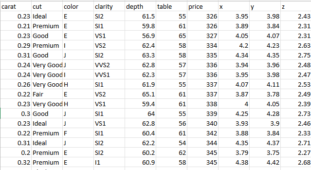
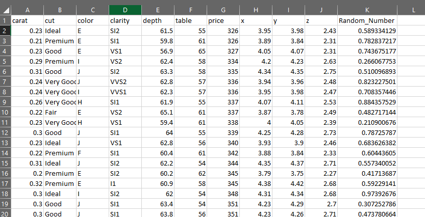
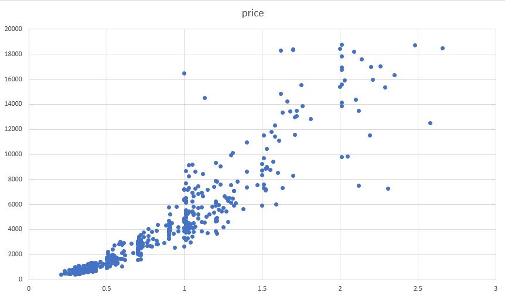
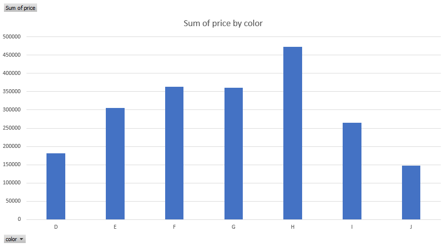
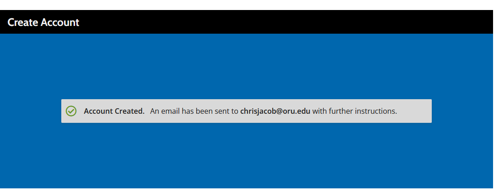
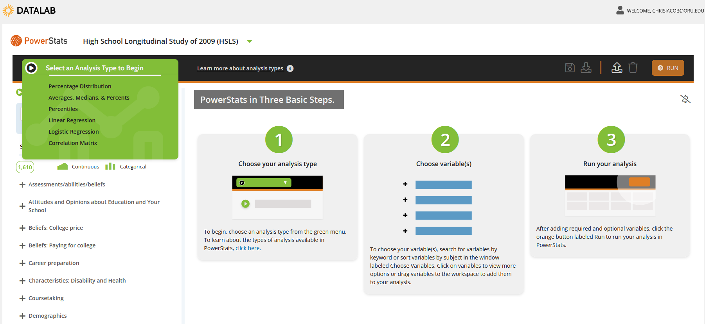
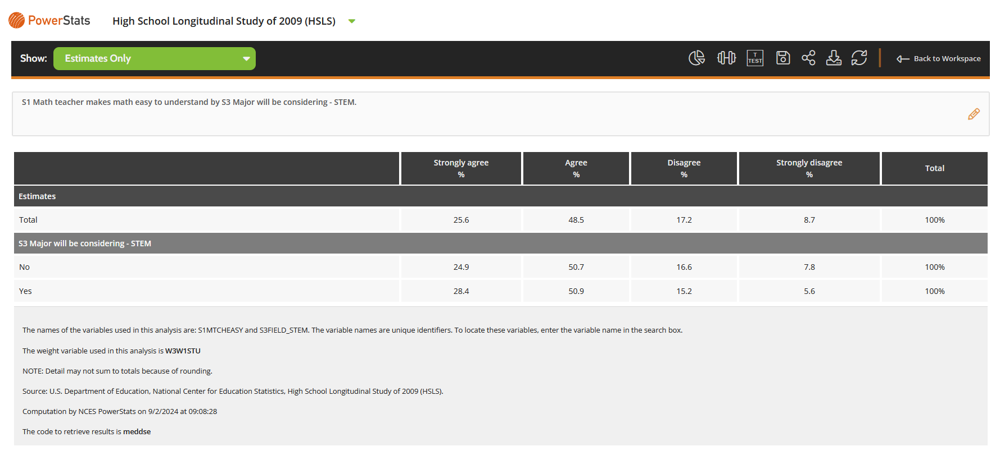
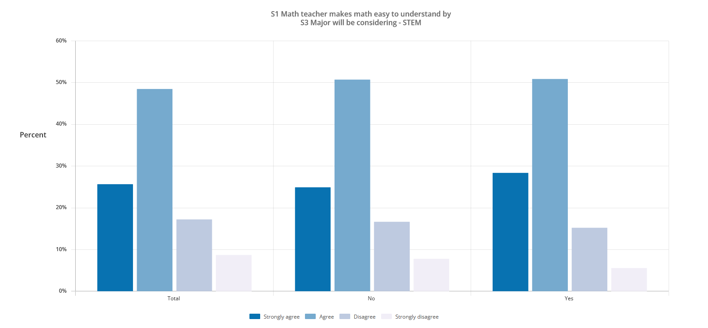

4 National Center for Education Statistics - Chris Jacob
4.1 Wednesday
4.1.1 Diamonds Dataset
I applied the learnings and findings from the Excel Unit to another dataset, the diamonds_ggplot2.csv set. -  - The Diamonds dataset defines the different characteristics of a diamond namely, carat, cut, color, clarity, depth, price, and lengths in the x, y, and z direction The dataset itself did not have any NA values, and hence did not need any additional steps for cleaning the data. An interesting observation to be made was that there are several interesting correlations between the columns that can help us observe some basic trends in the diamond trading business. There were more than 53,000 records collected, and so this dataset is very comprehensive!
4.1.1.1 Preparing the dataset
Considering the size of the dataset, I had to use 500 random records to create my visualizations. Here’s a step by step guide on how I did that.
4.1.1.1.1 Add a random number column
- Choose a column and add the RAND() function to the column. Double click on the bottom right of the cell to paste the function to the rest of the rows in the dataset. This creates a random number between 0 and 1. 
- Next, we apply a filter to the entire dataset, and use the random number column (sorting it from smallest to largest). This automatically rearranges the data records, making the first 500 random.

- Copy the first 500 records to a new sheet. This now becomes your 500 records that give you a true random overview of the Diamonds dataset.

- Since the records didn’t contain any NA values, this looked like the only preparation I needed to do.
4.1.1.1.2 Creating visualizations
4.1.1.1.2.1 Scatter Plot: Carat VS Price
- The first plot I created was a scatter plot that visualized the relationship between the carat of the diamond and the price it would sell at 
- From this, we can see that the dimaonds that have a higher carat sell for more.
4.1.1.1.2.2 Histogram: Sum of Price by Color
The next plot I created was a histogram that visualized the relationship between the prices and the color of the diamond. 
From this chart, it was clear to see that the diamonds that had the most value were those with the ‘H’ coloration.
4.1.1.1.2.3 Other charts
- When trying to create more visualizations, I observed that not all charts were capable of visualizing this data, and furthermore, given the size of the dataset, all operations were much slower on the online excel sheet.
- I believe the best visualization for such data is the Scatter Plot of Price vs Carats, because it captures the inherent reality that more carats means more price. All in all, it was an interesting start to the class and helped me better understand how visualizations can be achieved on excel.
4.2 Friday
4.2.1 NCES Education Dataset
NCES Education Dataset is extremely vast and includes several different studies conducted over a range of years. Today, we’ll only be focusing the High School Longitudinal Study of 2009. https://nces.ed.gov/surveys/hsls09/index.asp
The High School Longitudinal Study of 2009 (HSLS:09) is a comprehensive study conducted by the National Center for Education Statistics (NCES). It tracks a cohort of students who began 9th grade in 2009, following them through their high school years and beyond into postsecondary education and the workforce. The study focuses on students’ educational trajectories, especially in STEM, examining factors like course-taking patterns, college aspirations, and career choices. The data collected provides insights into how high school experiences influence long-term educational and career outcomes.
4.2.1.1 Working with the datset
- This can be an extremely complicated process. The first step should be to go to https://nces.ed.gov/datalab/membership/register and registering yourself to access all the benefits that NCES datalabs offer. 
- This gives us access to the data lab dashboard. Since we can’t use excel because of the extremely large size, so we’ll have to use the datalabs power stats tool for this. 
4.2.1.2 Simple Visualization
Considering that I couldn’t use excel for this process, it was interesting to see the amount of data and variables I had at my disposal for this project. For example, just the keyword ‘STEM’ has 294 variables attached to it.
One comparison I made using the PowerStats tool to create a percentage analysis of the relationship between variables S1 and S3.
- S1 looks into how math teachers make math so easy to understand. This is divided as ‘Strongly Agree’, ‘Agree’, ‘Neutral’, ‘Disagree’, ‘Strongly Disagree’
- S3 shows how students might consider STEM as a major.
This visualization further strengthens the premise that teachers are the defining factors in a lot of the future decisions that students make.

- It further allowed me to use the bar chart to show this information visually. 
4.2.1.3 Inference
- These visualizations make it clear that teachers who help make concepts like math and science easier to understand, help these students choose STEM as a major in university.
- This insight will further add to the ‘STEM Focused’ dataset that I’ll be building during this semester.
4.2.2 Conclusion
- Given the vastness of this dataset, I believe it’s important for me to better understand and comprehend this dataset, so that I can fully utilize and appreciate all the data collected. Although I wasn’t able to use Excel on this dataset, the skills learned in the previous classes definitely helped set me up for success with this.